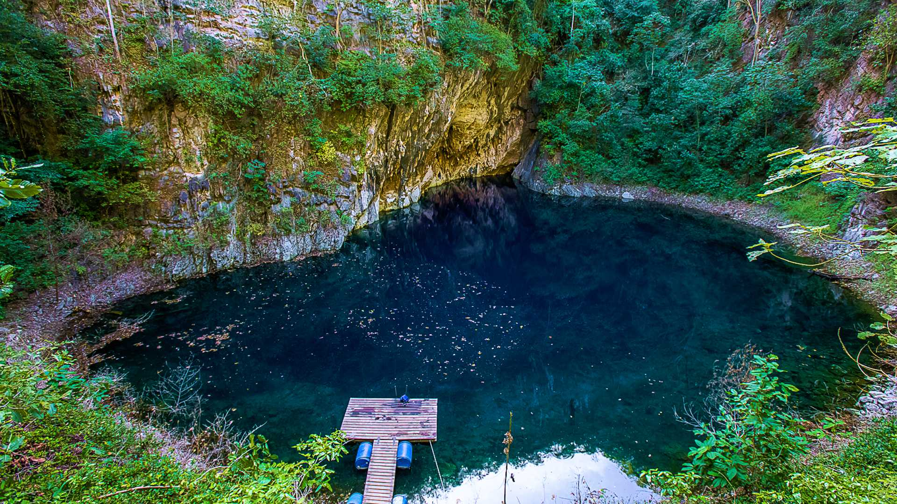
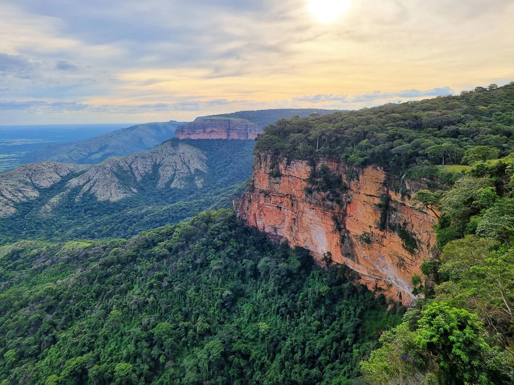
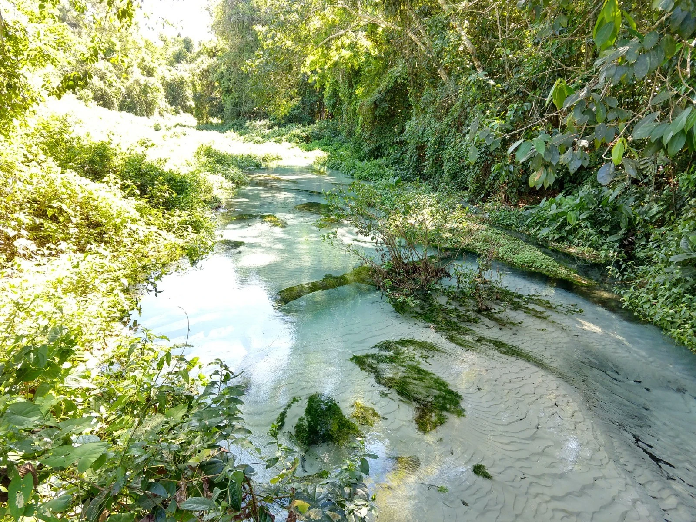
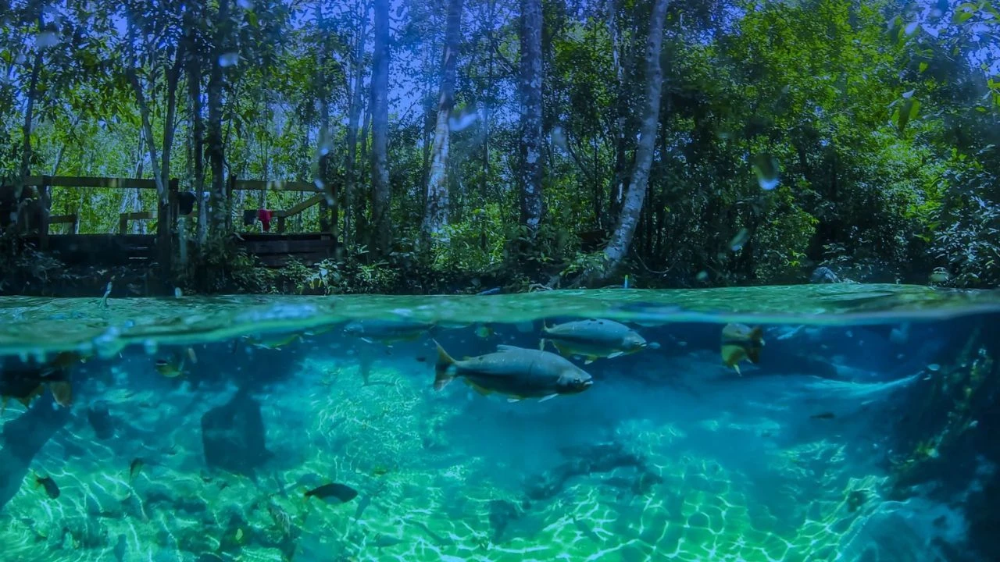
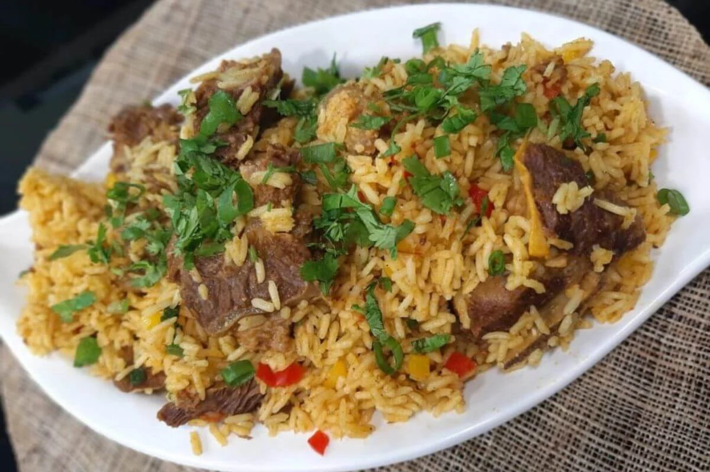
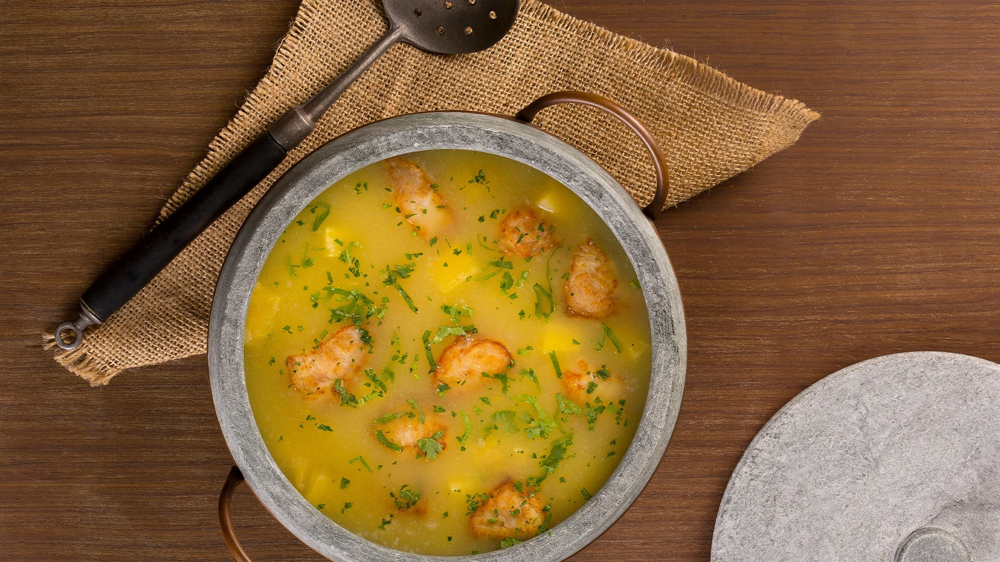
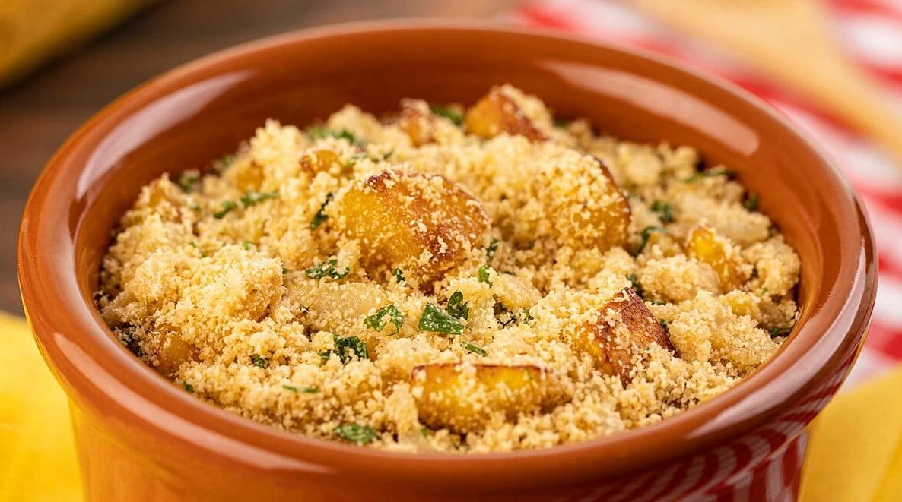

Capital
Cuiabá
Conheça destinos, culturas, sabores e paisagens de todas as regiões
brasileiras.
Destinos, culturas e paisagens
incríveis te esperam.
O Mato Grosso é um dos maiores estados do Brasil e está localizado na Região Centro-Oeste. Conhecido por sua vasta biodiversidade, abriga parte de três importantes biomas brasileiros: Amazônia, Cerrado e Pantanal. O estado se destaca pelo ecoturismo, pelas paisagens naturais impressionantes e pela forte atividade agropecuária.

Cuiabá
Aproximadamente 903.208 km²
Cerca de 3,8 milhões de habitantes
Centro-Oeste

Localizada próxima à capital Cuiabá, a Chapada dos Guimarães é famosa por suas cachoeiras, paredões rochosos e belas paisagens naturais. O destino atrai visitantes que buscam contato com a natureza, trilhas ecológicas e vistas panorâmicas do Cerrado brasileiro.

Localizado no norte do estado, próximo à Amazônia, o parque é conhecido por sua rica biodiversidade, trilhas na floresta e torres de observação que permitem admirar a imensidão da mata amazônica. É um dos principais destinos de ecoturismo exclusivamente mato-grossenses.

Situada no interior do estado, Nobres é conhecida por seus rios de águas cristalinas, cavernas e atividades de flutuação entre peixes coloridos. O município se destaca como um dos principais destinos de ecoturismo do Mato Grosso, oferecendo experiências únicas em meio à natureza.

Prato preparado com arroz e carne-seca, muito popular em todo o estado.

Ensopado feito com pintado, tomate, cebola e temperos regionais.

Farofa preparada com banana-da-terra, muito servida junto a peixes e carnes.
O clima é predominantemente tropical, com período chuvoso entre outubro e abril e estação seca entre maio e setembro. A época seca costuma ser a melhor para passeios e observação da fauna.
O clima é predominantemente tropical, com período chuvoso entre outubro e abril e estação seca entre maio e setembro. A época seca costuma ser a melhor para passeios e observação da fauna.
A Chapada dos Guimarães é ideal para quem gosta de cachoeiras e trilhas. O Pantanal é perfeito para observação de animais, enquanto Nobres oferece atividades aquáticas em águas cristalinas.
A Chapada dos Guimarães é ideal para quem gosta de cachoeiras e trilhas. O Pantanal é perfeito para observação de animais, enquanto Nobres oferece atividades aquáticas em águas cristalinas.
A culinária mato-grossense combina influências indígenas, sertanejas e pantaneiras, com destaque para pratos à base de peixe, carne-seca e ingredientes regionais.
A culinária mato-grossense combina influências indígenas, sertanejas e pantaneiras, com destaque para pratos à base de peixe, carne-seca e ingredientes regionais.